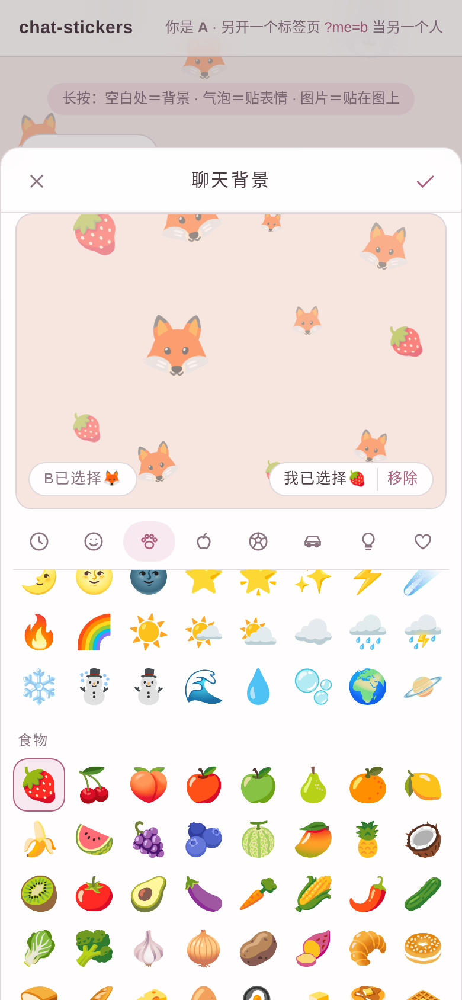
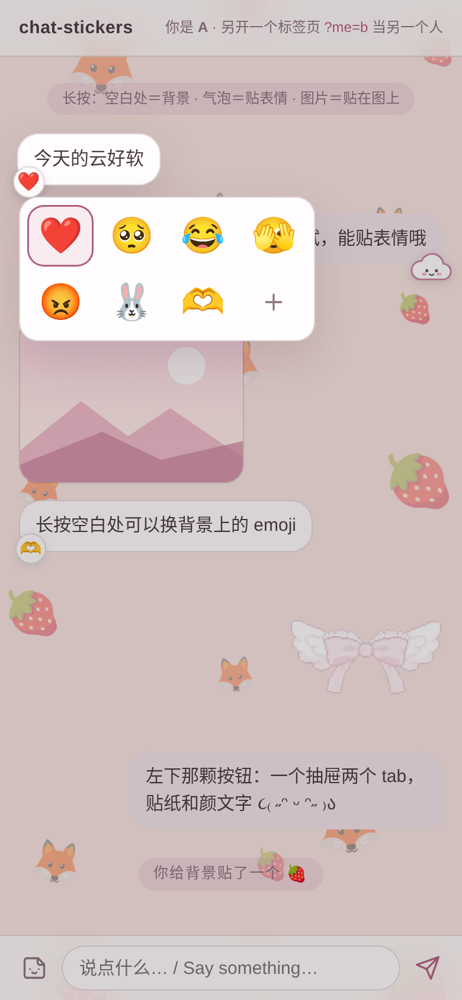
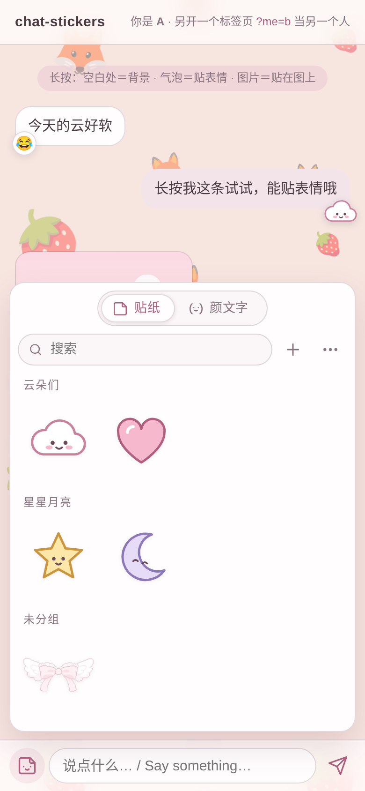
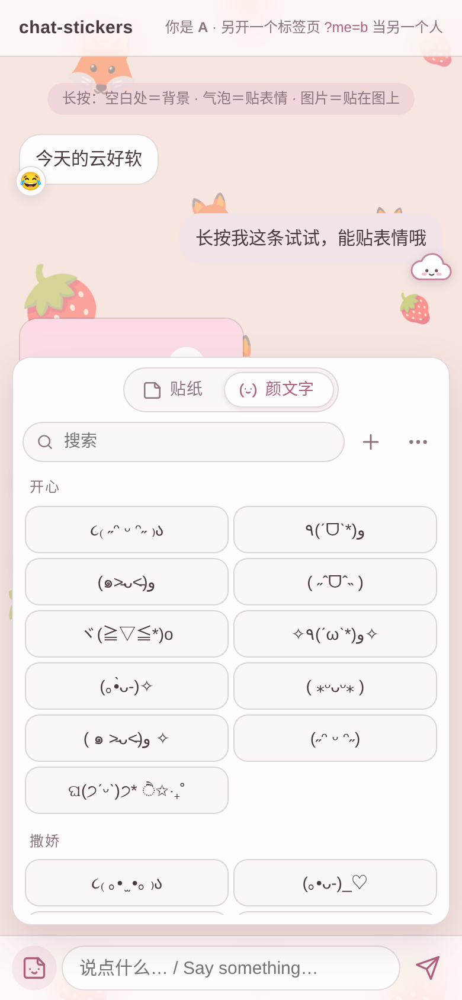

给聊天页的三样「贴」
长按哪里，就贴在哪里
按在空白处，贴到聊天背景上；按在气泡上，贴到那条消息上；按在图片上，贴到那张图上。再加上你自己的表情包库和一个颜文字小抽屉。零依赖，一个脚本接上就能用。
Long-press where you want it to stick — the background, a bubble, or a picture. Plus your own sticker shelf and a kaomoji drawer. Zero dependencies.




三步接入
引进来
<link rel="stylesheet" href="dist/chat-stickers.css"> <script src="dist/chat-stickers.js"></script>
消息列表每行带
data-id，气泡是.bubble；输入框旁放两颗按钮<div id="messages"> <div class="row" data-id="m1"><div class="bubble">…</div></div> </div>
初始化，接上参考后端（
server/）ChatStickers.init({ container: "#messages", me: { id: "a", name: "A", emoji: "🐰" }, others: [{ id: "b", name: "B", emoji: "🦊" }], api: "/chat-stickers", stickers: { button: "#stickerBtn", input: "#input", send: (t) => sendMessage(t) }, kaomoji: { button: "#kaomojiBtn", input: "#input" }, });
长按三分法
| 按在 | 打开 | 贴到 |
|---|---|---|
| 列表空白处 | 聊天背景面板：两人各选一枚 emoji | 聊天背景（两边同步） |
| 文字气泡 | 两行四格，＋ 打开表情包 | 那条消息的角上 |
| 图片 | 同一个格子 | 那张图的角上 |
还有
| 表情包库 | CLI 和最小服务；稳定编号；改名字时旧名进 aliases，历史消息不断图；顶栏 ＝ 搜索 ＋ 添加 ＋ 更多 |
| 颜文字 | 九组内置；支持粘贴任意颜文字网页导入、同步只端新的 |
| 样式 | 一套 --cs-* 变量，浅色深色都有；图标全是细线 SVG |